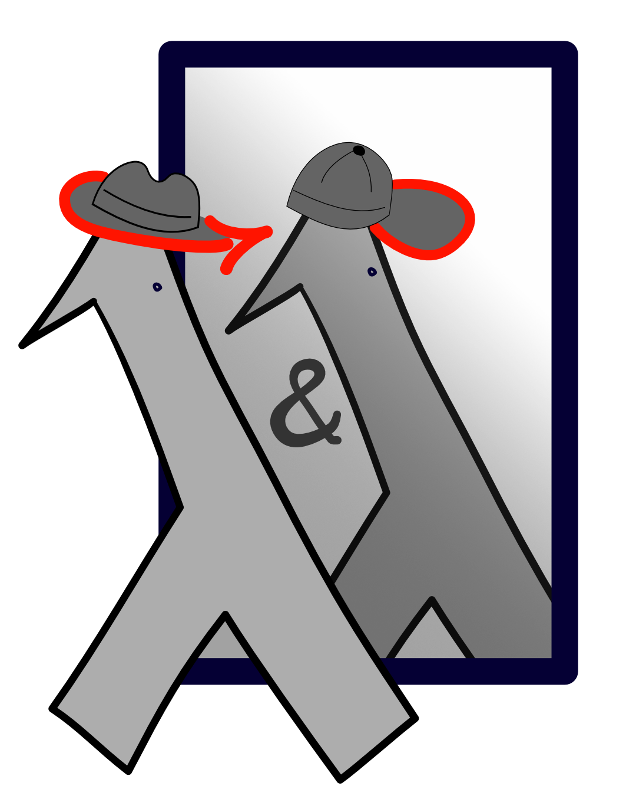

The Proofs and Programs Club @ RHUL

What do we do?
Research projects
We are currently investigating the following topics (available as UROP projects to RHUL students):
Weekly meetups
We meet every week to learn about logic, proof
assistants, certified programs, and programming language theory.
We use the Isabelle proof assistant adn we follow the
Programming and Proving in
Isabelle/HOL book.
We have used the Coq proof assistant and we learn it using
the
Software Foundations books.
Who are we?
Organisers
Students
- Ben Collins (UROP 2022, UROP 2023)
- Isaac Joseph (UROP 2022, UROP 2023)
Contact us
Find us on Discord, contact any of the organisers for an invitation.